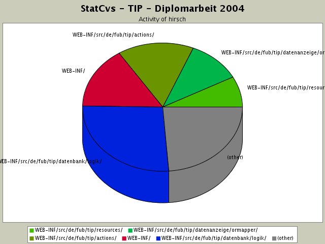
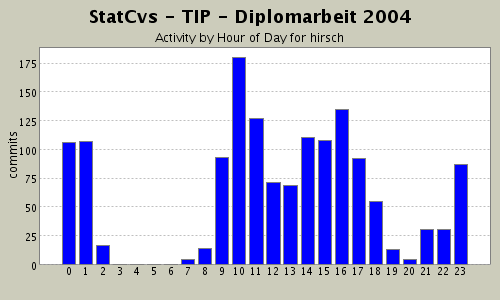
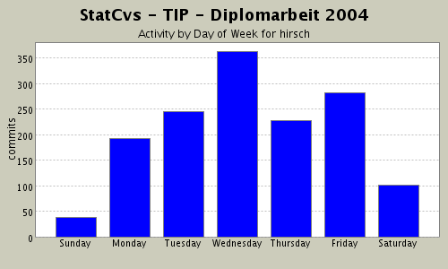

Summary Period: 2004-02-25 to 2004-06-13
1451 (100.0%)
20553 (100.0%)

| Directory | Changes | Lines of Code | Lines per Change |
|---|---|---|---|
| Totals | 1451 (100.0%) | 20553 (100.0%) | 14.1 |
| WEB-INF/src/de/fub/tip/datenbank/logik/ | 199 (13.7%) | 5461 (26.6%) | 27.4 |
| WEB-INF/ | 174 (12.0%) | 3206 (15.6%) | 18.4 |
| WEB-INF/src/de/fub/tip/actions/ | 182 (12.5%) | 3171 (15.4%) | 17.4 |
| WEB-INF/src/de/fub/tip/datenanzeige/ormapper/ | 92 (6.3%) | 2253 (11.0%) | 24.4 |
| WEB-INF/src/de/fub/tip/resources/ | 81 (5.6%) | 1592 (7.7%) | 19.6 |
| WEB-INF/src/de/fub/tip/actionforms/ | 46 (3.2%) | 970 (4.7%) | 21.0 |
| WEB-INF/src/de/fub/tip/datenbank/factory/ | 25 (1.7%) | 751 (3.7%) | 30.0 |
| WEB-INF/src/de/fub/tip/datenanzeige/container/ | 20 (1.4%) | 645 (3.1%) | 32.2 |
| WEB-INF/src/de/fub/tip/datenanzeige/ | 30 (2.1%) | 583 (2.8%) | 19.4 |
| WEB-INF/src/de/fub/tip/datenbank/ | 26 (1.8%) | 437 (2.1%) | 16.8 |
| WEB-INF/src/de/fub/tip/actions/admin/ | 12 (0.8%) | 419 (2.0%) | 34.9 |
| WEB-INF/src/de/fub/tip/exceptions/ | 21 (1.4%) | 322 (1.6%) | 15.3 |
| WEB-INF/src/de/fub/tip/datenanzeige/beans/ | 9 (0.6%) | 221 (1.1%) | 24.5 |
| / | 140 (9.6%) | 200 (1.0%) | 1.4 |
| WEB-INF/src/de/fub/tip/actions/debug/ | 2 (0.1%) | 142 (0.7%) | 71.0 |
| WEB-INF/src/de/fub/tip/ | 6 (0.4%) | 111 (0.5%) | 18.5 |
| WEB-INF/javadocTemplates/ | 5 (0.3%) | 52 (0.3%) | 10.4 |
| pages/data/ | 19 (1.3%) | 13 (0.1%) | 0.6 |
| doc/ | 2 (0.1%) | 4 (0.0%) | 2.0 |
| pages/menu/ | 36 (2.5%) | 0 (0.0%) | 0.0 |
| pages/input/ | 72 (5.0%) | 0 (0.0%) | 0.0 |
| pages/include/ | 11 (0.8%) | 0 (0.0%) | 0.0 |
| pages/data/error/ | 10 (0.7%) | 0 (0.0%) | 0.0 |
| pages/data/debug/ | 5 (0.3%) | 0 (0.0%) | 0.0 |
| pages/data/anzeige/topic/ | 12 (0.8%) | 0 (0.0%) | 0.0 |
| pages/data/anzeige/sight/ | 40 (2.8%) | 0 (0.0%) | 0.0 |
| pages/data/anzeige/event/ | 9 (0.6%) | 0 (0.0%) | 0.0 |
| pages/data/anzeige/ | 32 (2.2%) | 0 (0.0%) | 0.0 |
| pages/data/admin/ | 21 (1.4%) | 0 (0.0%) | 0.0 |
| pages/css/ | 3 (0.2%) | 0 (0.0%) | 0.0 |
| pages/ | 71 (4.9%) | 0 (0.0%) | 0.0 |
| WEB-INF/src/ | 4 (0.3%) | 0 (0.0%) | 0.0 |
| WEB-INF/lib/ | 33 (2.3%) | 0 (0.0%) | 0.0 |
| META-INF/ | 1 (0.1%) | 0 (0.0%) | 0.0 |


letzte Version, die auf CD gehen soll zur Probe einchecken und dann
auf MasterCD brennen ...
0 lines of code changed in:
Kosmetika an der Ansicht -
leerzeilen,
Tabelle statt nur hintereinander schreiben (information.jsp);
Tippfehler in RessourceBundle beseitigt
6 lines of code changed in:
Ausgabe angepasst!
* Sehenswürdigkeitsinfo für information.jsp hinzugefügt
* Kosmetik an den Tabellen
0 lines of code changed in:
Alle VOs sind jetzt in ihren toString()-Methoden
ohne NullPointer-Aufkommen - damit kann man auch halbgeladene
Bohnen ausgeben und kriegt keine Fehler mehr !
178 lines of code changed in:
city und country wurden nicht auf isNull() geprüft! in toString()-Aufruf,
zusätzlich jetzt logger eingebaut, um zu sehen, ob das der letzte Aufruf in catalina.out ist!
12 lines of code changed in:
toString()-Methode nun garantiert ohne NullWerte gemacht!
15 lines of code changed in:
neue Vermutung:
in inspectvariables.jsp tauchen NullPointerExceptions auf!
Jetzt ist die ganze Sache NullPointerException-proof !
0 lines of code changed in:
Anpassung der RessourceBundles an neue Seiten
- data/anzeige/sight/information.jsp und eventarea.jsp
37 lines of code changed in:
Anpassen des Verweises - vll. wird die NullPointerException auch
durch Verweis ausgelöst ... hoffentlich wird inspectvariables.jsp ausgeführt
6 lines of code changed in:
weitere Suche nach Exception - Parametertransport klappt in Action,
jetzt fehlen Verweise in information.jsp -.... mal sehn.
2 lines of code changed in:
immer noch auf der Suche nach der NullPointerException
4 lines of code changed in:
Gucken, ob SightVO korrekt weitergegeben wird.
2 lines of code changed in:
loggingausgaben zur fehlersuche hinzugefügt - immer noch NullPointerException bei irgendeinem
SightVO-Objekt
4 lines of code changed in:
Falscher Verweis auf SightVO war Ursache für NullPointerException
5 lines of code changed in:
SQL so angepasst, das doppelt vorkommende Sachen (wie name) jeweils als s.name AS sname und t.name as tname selektiert werden.
Dann wird rs.getString("sname/tname") gemacht!
3 lines of code changed in:
Anpassungen - t.name wird nicht ausgelesen
6 lines of code changed in:
Anpassen der Inhalte zur Infoanzeige
3 lines of code changed in:
Anzeige verfeinert - zum Debugging mal alles anzeigenlassen ...
3 lines of code changed in:
Anzeige der Sehenswürdigkeit verfeinert -
NullPointerException kam beim Logging ....
7 lines of code changed in:
Die Sehenswürdigkeit, zu der Infos angezeigt werden, wird jetzt als
separates Objekt gespeichert, damit die Ansicht Infos dazu anzeigen kann.
12 lines of code changed in:
(346 more)
Generated by StatCvs v0.2-dev